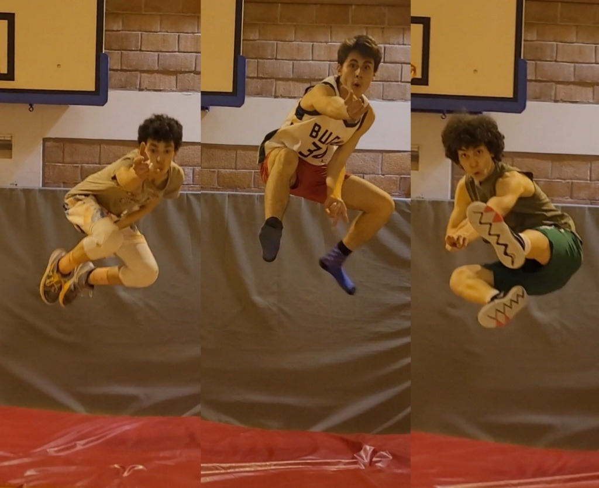

Mihail's complete list of bacbook comments
Mon très cher ami Mihail ! Tu es devenu un ami très important pour moi en S7. Depuis que je te connais tu
t’es
montré très humble et respectueux. Tu es un jeune homme doté d’un grand intellect et beaucoup d’ambition. Je
te
remercie pour être mon ami, tu as un cœur si grand et juste. Que le Christ soit pour toujours de ton côté.
Mathias Nagant
Mihail is someone I never expected to befriend at first since I was very introverted and he is very
extroverted,
but he definitely changed the way I see other people. His positive attitude and genuine desire to get to
know
everyone make him a great person to be around, and his jokes always get people in a good mood. He's always
there
to brighten up your day. This bastard will never fail to put a smile on your face, even during bad times.
I'm
grateful for his friendship.
Mich Mich toujours un des gars les plus honnête et celui avec le plus grand coeur que je connais. Zsombor
Bon, on ne va pas le nier tu es le clown en chimie. Tu m'a bien embêtée ces deux années, mais malgré cela,
en
vrai, même si je restais sérieuse, tu me faisais rire aussi. On aurait pas eu cette ambiance. Mais ça a
toujours
été ton truc, depuis L2 anglais avec Ms. Donaldson...tu ne restais pas sur place haha. Allez bon vent pour
le
futur et continue de faire rire les gens!
Klaara J. S7FIA
On a fait le hot chips challenge chez moi, on t’a rasé la tête chez toi. Jtai vu grandir et devenir la
personne
que t’es aujourd’hui. Ta mentale minpressione toujours. Trace ton propre chemin bg!
Mark: Le bon vieux frère roumain. Tu est très sérieux et vraiment très respectable.Je ne me fais pas de
soucis
pour toi.Ne vedemi in roumania!
Très très bonne personne avec un très grand cœur. Tu joue un très grand rôle dans mon enfance et
adolescence,
merci pour tous tes conseils et je m’en souviendrais de tous les bons moments qu’on a passé ensemble.
J’espère
et je suis sûr que un jour nos chemins se recroiseront et à ce moment-là on pourra profiter de la vie. D’ici
là
je te souhaite que du bonheur et bcp de succès dans tes projets et oue à bientôt ! Kalo :)
Mihail, bro, you were my first friend in this school and I am incredibly thankful for all the support you
have
given me throughout these 2 years. You are incredibly kind and smart and genuinely one of the realest people
I
have ever known. You have made every geo, eco, history so fun and memorable. I am more than sure that your
future will be filled with success and happiness, I believe that you will make the most out of every
possibility
you will have. I wish you all the best and to always be yourself man. Much love❤️ Juris
Mihail, un garçon souriant et pleins de bonté ! Un homme sans ennemis et fidèle a dieu. On c'est bien amusé
avec
toi au cours d'économie et surtout en religion 😂 je te souhaite du bohneur, de la réussite et pleins de
santé
🥂 je croise les doigts. Aleks (le bulgare)
coucou mihailll ! t’es une personne super gentille avec toujours plein (ou trop) d’énergie! t’arrives
toujours à
faire la conv avec les gens, les profs comme les élèves. c’était trop bien les loups-garous à 28 et les
baignades dans la mer le soir en croatie!
hey Mihail, it was very nice having you in my history class, I wish you all the best for the future :) Carmo
En S4, je me sentais souvent seul et peu apprécier mais toi tu me parlais et tu étais toujours sympa avec
moi.
Tu est quelqu'un de gentil, ainsi qu'une boulle d'énergie. Tu es toujours souriant et tu transmets ton
énergie à
ton entourage. Quand j'étais en ta compagnie, je me sentais toujours bien et heureuse, et après avoir passé
quelques minutes avec toi je savais que je serais de nouveaucharger a bloc. Tu es l'une des personnes que je
n'oublierai jamais car tu a été une partie importante de ma vie, que ce soit à l'école ou en dehors. Ne
change
jamais et j'espère que tu réalisera tout tes objectifs. Que Dieu soit avec toi. Anna-Lisa Randazzo
Pour le plus bg des roumains…
Thiplouf
Mihail, you are one of those rare people who is capable of always maintaining a positive outlook on life,
which
makes you a wonderful person to be around; always smiling and ready to have fun.
Thank you for putting up with me in winterball, springball, footfest and the student council.
Best of luck with the future Mihail!
Yours,
Saverio
T’es vraiment un bon gars j’espère que t’iras loin dans la vie, je te souhaite le meilleur pour la suite.
Tu étais une chouette rencontre et je te souhaite le meilleur pour le futur !
Alexandra
On se connait depuis longtemps, on a passer plein de bon moments ensemble a jouer au basket et a faire du
velo.
T’a vrmt un grand coeur. Je te souhaite le meilleur pour ton futur! Max Buchmann
Man gars, depuis que t ai arrivé en p4 on est toujours ami jusqu’à aujourd’hui, on s’en vu évoluer et passe
de
bon moments ensembles et franchement t un bon et ta tout pour réussir. Gabriel Tusei
KEEP IT UPP G!!!!🔝
Thank you for these years and God bless your soul - Luukas
Hey Mihaaaaaail! Dude, I’ve got to thank you for all the fun moments we had in PE together, and for making
all
my years here in EEBII happier and more animated. You were always super enthusiastic and motivated, and
you’ve
made my experience in this school much nicer with all that positive energy! Keep up that amazing attitude of
yours and I hope you and your bike will get far in life. - Manuel Almeida
Hey Mihail! We only started being friends around the beginning of S6, but I am glad we did. You’re one of
the
most fun, relaxed and different people I know. Your upbeat personality and persistence beats anyone else’s,
and
I know that you are going places because of it. You’re a hardworking CDE member, of course, as you brought
the
Basketball Competition to life and you make some great Treasury reports. Speaking more personally, we’ve had
some good times together, like that time we biked to Decathlon. You’ve always given me a push when needed,
and I
think we make a great team together. Sometimes we disagree about the way forward, but we always sort it out
and
make something great. I really wish we keep in contact after school, and maybe one day we can start a
business
together ;). See you soon! -Francisco
Maintenant c’est le tour deeeeee : Mihail Staicu. Futur personnalité importante Roumaine. Et ça c’est sur.
Putain mec j’arrive pas à y croire. Ça fait 8 ans on est pote putain. C’est un truc de fou. Je me rappelle
encore quand t’étais nouveau et je t’appelais e-mail parce que j’arrivais pas à prononcer ton nom. MIHAIL.
Je
pense honnêtement que si je devais faire confiance à une personne, une pas deux, sa serais toi. Et Oue mec.
Tu
m’a littéralement jamaisssss trahis. Et c’est pour ça que aujourd’hui tu fait partie de mes frères qui ne se
comptent que sur les 5 doigts d’une main. Tu m’a eeeenormement inspiré et poussé vers le haut. J’ai passé
énormément de moments inoubliables comme en Roumanie tard la nuit à jouer au foot et de parler de tout et de
rien ou bien en Lettonie où on a littéralement été des SDF. Mec ta vraiment énormément potentiel dans
l’école,
peut être celui qui en a le plus. Moi mon conseil pour toi sa serais de te concentrer plus sur des projets
singuliers, et pas un 9 projets en même temps. Te concentrer seulement sur des projets qui te rapproche de
tes
objectifs et le plus efficacement possible, et aussi de ne pas faire ce que tu aime mais de aimer faire ce
que
tu fait. C’est différent. Esseye de comprendre, parce que j’ai l’impression que tu l’applique pas trop. Bref
mec
t’es un frr que je pourrais pas trouver mieux, et je me doute même pas qu’on se reverras dans 50 en tant que
bon
CEO💶
mon gars on se connait depuis longtemps. Je me rappellerai toujours des cours d’anglais avec toi et Kalo.
Quand
on faisait des batailles de boulettes de papier et que Mrs.Tukiainen nous avait fait ranger toute la classe.
Je
te souhaite que du bonheur et je sais que tu deviendras surement un business man ou président de la
Roumanie.
---- Olivier Deschrijvere
Mihail, we’ve known each other for a while now and im so glad I got to meet such a sweet, smart and funny
guy
like you! Congratulations and I wish you the best of luck for your future! - Inês❤️
Franchement Mihail t’es vraiment un bon gars t’as beaucoup de potentiel. J’espère que t’exploitera tout ton
potentiel et que t’iras aussi loin que tu puisse dans ta vie. Je te souhaite le meilleur pour la suite et
bonne
chance avec tes études.
Alala Mihail , depuis la s2 on est dans la même classe , tu es une très bonne personne, très sympa , très
généreux et surtout à l’écoute de tout le monde . Je te souhaite que du positif pour ton futur et la santé à
toi
et tes proches . Reste comme tu es et surtout ne lâche pas le business car tu es doué. Bonne chance pour tes
étude mon frérot !
tu es une des personnes qui investi le plus dans ces projets que je connaise. Des projèts de CDE a la
compétition de basket. Tu ma montre que si une personne a le pouvoir de prèsque tout accomplir si elle le
veut
vraiment. J'ai passée a coté de toi des moments inoubliables et j’espère que je vais continuer a en passer .
De
même je t’espère de la reussite dans tout ce que tu entreprends.
When are we going on our next Christmas decoration hunt? It's been a pleasure to have met you, and still
very
cool to say that you served as my vice president for a while. Wishing you lots of success ahead! -Linnéa
Best of luck for the future Mihail. Thank you for all the memories in Croatia. ✝️❤️☦️
L'énergie qu'apporte Mihail à un cours de Bio, une conversation, des révisions est INCROYABLE. La
motivation, la
volonté de réussir, la jovialité et l'humour sont toujours au rendez-vous. Quelque parties de R6, des
révisions
de Bio, je me demande comment je poursuivrai sans tout ça pour se remonter le moral. Mais ce qui est sûr,
c'est
qu'avec une détermination comme la tienne, tu iras loin! Merci mille fois pour tout et je te souhaites le
meilleur pour l'avenir!!!
Bon bon bon, mon p’tit Staicu, sa a été un plaisir d’avoir été à tes côtés durant ces quelques années
d’école.
En tout cas même si ces dernières années on a pas été aussi proches qu’au part avant, je gardes de nombreux
bons
souvenirs avec toi. Haha les hot buggles challenge, ou le buzzcut quon a fait chez toi par exemple. En tout
cas
j’admire ta détermination, ta foi pour dieu et ton travail acharné. Je te souhaite le meilleur pour la
suite,
même si je suis persuadé que t’atteindras ta vie espérée. Longue vie bg!
you're god's most sociable and talkative man out there. People either love it or hate it, and I love it ;)
Les classes de religions ensemble et nos séances basic fit étaient incroyables 😂 tu ma même donné envie de
faite les jambes a la salle (c'est faux). Et sinon merci aussi pour le winterball, tu sais de quoi je parle
haha. Garde ta foix en
Mihail, tu es toujours optimiste et tu es tout le temps prêt à apporter ton aide lorsque c'est nécessaire.
C'est
aussi très intéressant de débattre avec toi car tu as souvent un point de vue différent au mien. Je te
souhaite
le meilleur pour ton avenir. -Saulius
Mon frero Mihail… Le goat de la Roumanie, le prochain Andrew Tate… Franchement frero t’es vraiment un bon
gars.
J’ai rarement vu quelqu’un d’aussi honnête que toi mais fais attention, l’honnêteté c’est une qualité mais
aussi
un défaut dans la vie frero… On a passé des tres bons moment ensemble (les cours d’ICT). Dommage que nos
projets
n’ont pas aboutis… Je te souhaite que le meilleur pour la suite et j’espere que tu vas tout casser dans le
domaine de la bio🙏. Je garde ton num pour quand tu seras riche 🤣. La vérité frero si un jour t’as besoin
n’hésites pas a m’appeler 💪
Yo Mihail! I’m never going to forget the mini-entreprise we had together. Even if it wasn’t the biggest
success
i learnt a lot from it and from you. You were always motivated and tried to bring in positive energy even if
the
group energy was low. You don’t care what other people think and just do what feels right to you. Thats very
respectable and will be very valuable for your future. So keep all of that and I wish you all the best. I’m
very
sure you are going to achieve everything you want in life! -yves
partenerul meu român, chiar dacă acum când scriu tu tot nu știi unde te vei duce pentru universitate sper să
te
duci undeva unde o să fii fericit. Ne cunoaștem de mici și sunt foarte fericită că te-am cunoscut. O să-mi
amintesc pentru totdeauna cursurile de chimie unde ne-am zbătut să înțelegem cursul sau când avem TP de
făcut și
ne uităm unul la altul de pierduți eram și deci începeam tot timpul ultimii. Multă baftă pentru anii
următori. -
Daria
Même si depuis quelques temps on s’est beaucoup éloigné je garde des souvenirs inoubliables de toutes les
aventures qu’on a vécu : dimitripomping et locked contract, tous les appels, toutes les soirées, le stands à
la
footfest, toutes les fois chez toi, tous les cours, tous les baskets, tous les déguisements, tous les cinés,
et
je peux même pas cité le quart. Je pense honnêtement que tous ces moments m’ont marqué à vie et m’ont forgé
en
tant que personne. Je te souhaite pleins de réussite dans tous tes projects et la santé pour ta famille.
Josep
Dragă Mihai, parcă acum eram in S2 când făceam un dance battle during the footfest disco lol. Timpul a
trecut și
tot ai rămas același băiat deștept și simpatic. Mă bucur că ne-am cunoscut. Îți doresc numai bine pentru
viitor,
să ai grijă de tine și să fii fericit. Sper să ne revedem pe curând! -Fabiana Sacco
Mihail, my favourite Romanian. I loved the Croatia trip with you and the boys, watching movies at night and
blasting music, and flexing in front of the mirror, or that time you came in to the room quickly and scared
the
crap out of us while we were watching a horror movie. Thanks for the English classes too, and all the
moments we
spend together, at the gym too. Thanks for being a good friend and making me laugh all the time. Good luck
with
everything – Gui
Hi Mihail, i just wanted to say that i'm really grateful that you are in my lab bio team because i think i
would
be lost without you ahah. I wish you the best for the future because you're a great guy who's full of energy
and
ready to do any challenge. Best of lucks!! :) -Giulia
hey mihaill, bio lab was really fun with you, you’re a really nice person and i’m happy we met! wish you all
the
best and i hope you get into the university in sweden
Sofia
N-am văzut eu vreodata pe cineva mai plin de viată şi mai prietenos ca tine! Cu aşa calități, niciun dubiu
că o
să-ți iasă planurile! - Gabriela
Waddup my favorite Romanian neighbour. Coolest biker of eeb2. Went from a shitty vtt to a proper motorcycle.
Still waiting for that ride...good luck bro, wish u all the best. Ivan Skrabalo.
Man we've been really close for lots of years now those years playing together where the best you are a
great guy and a really good friend continue being how you are cause there not many like you left . I really
hope the best for you in the future cause I'm sure you'll do great and for sure you'll have some fun good
luck with uni and I hope we can meet up in the future and have a laugh like always
Pablo Ramos
I actually didn't know u that much or long. But I met you in the ball club when I started. U were rly good
and all athletic ofc haha. But like your jokes and humour bro that was so great. Personally from the team u
were the one that wasn't part of a small group like the Ari's panos rares or that stuff and was with
everyone. In the summer camp that shit was crazy. We had so fun in Greece joking around all of us. Then u
stopped basketball because of school or smth. But we were in some parties together and all. I hope we will
have some more shit going on like that. And I wish u all the luck in life man. Albert.
Ever since I’ve known you, you have been incredibly fun and social. You become friends with everyone you
meet
and always find a way to make them laugh. You also aren’t one to back down from a challenge and are ready to
work hard to achieve anything. Whether it be a basketball tournament or some job in the CDE, you are
hard-working and will get anything done. - Jose
Ne am cunoscut acu 7 ani de la basket dar am devenit de adevărat prieteni in sezonul ăla legendar cu Etienne
unde stăteam ore întregi după antrenament la povestit. Și dupa aia vara care urma la fel de legendara cu
yuppy
camp unde practic echipa noastră a devenit o familie și am descoperit femeile grecești. Si când am mers la
bunicii noștrii si am avut tot felul de peripeții: ne am dus pe șinele de tren si mi-a fost prea frica sa ma
urc
pe turnul ăla. In alta zii am mai ieșit in oraș împreuna si ne-am întâlnit cu tăticul ăla care se holba la
gagici de 15 ani. In ultima vreme nu am mai fost așa de apropriați dar sa știi ai fost tot timpul un exemplu
pentru mine cu generozitatea ta și capacitatea ta de à devenii prieten cu orice necunoscut. Îți urez to ce
este
mai bun in viitor. - Rares
Cher Mihail,
C'était trop bien de te connaître, t'es quelqu'un qui est hyper ouvert et sympa, et toujours à l'écoute.
J'oublierai jamais ce fameux symposium de sciences, surtout la fois où on a mangé du poulet frit à 2h du mat
haha. Et puis t'étais toujours le centre de la fête à tous les sleepovers, un vrai party animal. Je te
souhaite
que du bon Mida, je suis sûr qu'avec cette capacité à parler avec les gens t'iras loin!